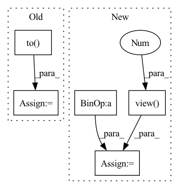

Pattern ID :3233
Before Change
aux_in = torch.empty((global_graph_out.size()[0],
self.polyline_vec_shape)
).to(self.device)
aux_gt = torch.empty((global_graph_out.size()[0],
self.polyline_vec_shape)
).to( self.device)
for i, idx in enumerate(mask_polyline_indices):
aux_in[i] = global_graph_out[i, idx].squeeze(0)
aux_gt[i] = x[i, idx].squeeze(0)
aux_out = self.aux_mlp(aux_in)After Change
// mask out the features for a random subset of polyline nodes
// for one batch, we mask the same polyline features
if self.with_aux:
mask_polyline_indices = [random.randint(0, time_step_len-1) + i * time_step_len for i in range(x.size()[0])]
x = x.view(-1 , self.subgraph_width)
aux_gt = x[mask_polyline_indices]
x[mask_polyline_indices] = 0.0
x = x.view(-1, time_step_len, self.subgraph_width)
global_graph_out = self.global_graph(x, valid_lens)
pred = self.traj_pred_mlp(global_graph_out[:, [0]].squeeze(1))
In pattern: SUPERPATTERN
Frequency: 4
Non-data size: 5
Instances Fragment ID: 17168823
Project Name: henry1iu/tnt-trajectory-predition
Commit Name: d5edc8d904cf69f92ff3c5f3acdfeb64c820ccca
Time: 2021-01-21
Author: jb@LIUs-MacBook-Pro.local
File Name: core/model/vectornet.py
M Class Name: OriginalVectorNet
N Class Name: OriginalVectorNet
M Method Name: forward(2)
N Method Name: forward(2)
M Parent Class: nn.Module
N Parent Class: nn.Module
M File Name: core/model/vectornet.py
N File Name: core/model/vectornet.py
M Start Line: 213
M End Line: 242
N Start Line: 205
N End Line: 237
Before Change
valid_mask = len_range[None, :] < lengths[:, None]
// Position embedding
position = (lengths[:, None] - len_range[None, :]) * valid_mask.long()
pos_vectors = self.p_embeddings(position)
seq = seq + pos_vectors
// Self-attention
causality_mask = np.tril(np.ones((1, 1, seq_len, seq_len), dtype=np.int))
attn_mask = torch.from_numpy(causality_mask).to( self.device)
// attn_mask = valid_his.view(batch_size, 1, 1, seq_len)
for block in self.transformer_block:
seq = block(seq, attn_mask)
seq = seq * valid_mask[:, :, None].float()
his_vector = (seq * (position == 1).float()[:, :, None]).sum(1)
return his_vector
After Change
seq = seq + pos_vectors
// Self-attention
attn_mask = valid_mask.view( batch_size, 1 , 1, seq_len)
for block in self.transformer_block:
seq = block(seq, attn_mask)
seq = seq * valid_mask[:, :, None].float()
his_vector = seq[torch.arange(batch_size), lengths - 1]
return his_vector
Fragment ID: 17168822
Project Name: thuwangcy/rechorus
Commit Name: 7b8b88b828f814cb8da18e1305837d1bce99306c
Time: 2021-04-14
Author: THUwangcy@gmail.com
File Name: src/models/developing/ContraRecBeta.py
M Class Name: SASRecEncoder
N Class Name: BERT4RecEncoder
M Method Name: forward(3)
N Method Name: forward(3)
M Parent Class: nn.Module
N Parent Class: nn.Module
M File Name: src/models/developing/ContraRecBeta.py
N File Name: src/models/developing/ContraRecBeta.py
M Start Line: 280
M End Line: 297
N Start Line: 135
N End Line: 150
Before Change
valid_mask = len_range[None, :] < lengths[:, None]
// Position embedding
position = (lengths[:, None] - len_range[None, :]) * valid_mask.long()
pos_vectors = self.p_embeddings(position)
seq = seq + pos_vectors
// Self-attention
causality_mask = np.tril(np.ones((1, 1, seq_len, seq_len), dtype=np.int))
attn_mask = torch.from_numpy(causality_mask).to( self.device)
// attn_mask = valid_his.view(batch_size, 1, 1, seq_len)
for block in self.transformer_block:
seq = block(seq, attn_mask)
seq = seq * valid_mask[:, :, None].float()
his_vector = (seq * (position == 1).float()[:, :, None]).sum(1)
return his_vector
After Change
seq = seq + pos_vectors
// Self-attention
attn_mask = valid_mask.view( batch_size, 1, 1 , seq_len)
for block in self.transformer_block:
seq = block(seq, attn_mask)
seq = seq * valid_mask[:, :, None].float()
his_vector = seq[torch.arange(batch_size), lengths - 1]
return his_vector
Fragment ID: 17168819
Project Name: thuwangcy/rechorus
Commit Name: 03e00482d35ef5c38ecdfba21aa5cd1802873944
Time: 2020-12-12
Author: THUwangcy@gmail.com
File Name: src/models/sequential/ContrastRec.py
M Class Name: SASRecEncoder
N Class Name: BERT4RecEncoder
M Method Name: forward(3)
N Method Name: forward(3)
M Parent Class: nn.Module
N Parent Class: nn.Module
M File Name: src/models/sequential/ContrastRec.py
N File Name: src/models/sequential/ContrastRec.py
M Start Line: 267
M End Line: 284
N Start Line: 270
N End Line: 285